React基础
React基础
简介
1 | 1.React 起源于 Facebook 的内部项目 因为该公司对市场上 JavaScript MVC框架 都不满意 就决定自己写了一套 |
模块化与组件化
1 | 1.模块化 是从代码的角度 来进行分析的(一些可复用的代码 抽离出单个的文件) |
Vue 与 React 的组件
1 | 1.VUE 创建组件 是用 创建.vue文件 来创建 主要有template script style |
环境的搭建
1 | 1.基于webpack4.x搭建 需要安装npm install webpack -D npm webpack-cli -D |
1 | //具体版本如下 别的版本可能会有问题 |
1 | //配置好webpack-dev-server 之后 他会在本地开启一个静态服务访问呢 就是你输入浏览器之后就相当于 你打开你的项目文件夹 里面的文件都会如下显示 默认是访问的是根路径 |
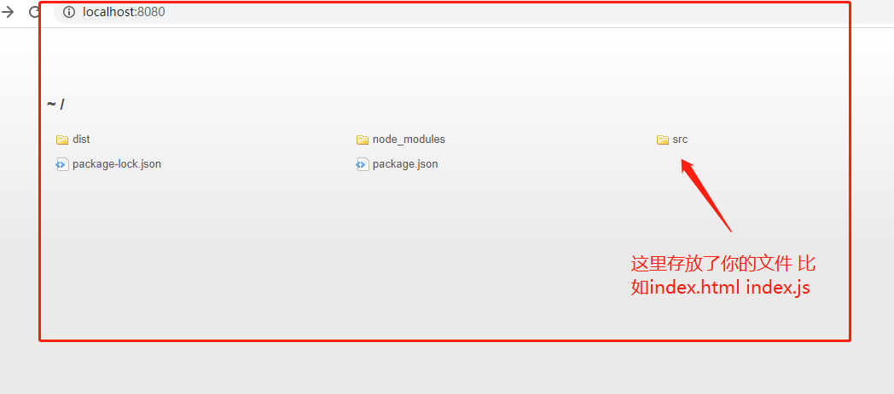
webpack-dev-server
1 | 1.上面我们已经配置了webpack-dev-server的命令 并在package.json里配置 dev 脚本 |
1 |
|
1 | //配置脚本 |
html-webpack-plugin插件
1 | 1.刚刚我们配置的时候把js 文件直接打包进内存中 在根目录下 |
1 | const path = require('path') |
配置省略后缀名
1 | 1.我们在引入组件的时候 经常会带入.jsx .vue .json .js后缀名 |
1 | const path = require('path') |
配置根目录标识符
1 | 1.可以配置一个符号 来代表 根目录的路径 |
1 | const path = require('path') |
安装react react-dom
1 | 1.在项目中 使用react 需要安装两个包 一个react 一个是react-dom |
创建和渲染
1 | //引入 必须要这么写 |
1 | //最终html页面上的显示 |
元素嵌套
1 | const myh1 = React.createElement('h1',{ |
使用JSX语法
1 | 1.我们以上都是在js里写 虚拟DOM 现在想使用标签的形式来写虚拟DOM |
1 | //JSX语法 |
配置babel
1 | 1.首先我们需要安装 babel的插件 babel-core babel-loader babel-plugin-transform-runtime -D |
1 | //首先我们在webpack.config.js下 配置转换jsx 或者jsx语法的laoder 使用babel-loader |
1 | //然后 我们要配置.babelrc 的配置文件 这个文件 主要告诉webpack 当我们用babel-loader 去转换jsx语法的时候 按照哪个babel的规则去转换 |
1 | //这样就可以些jsx语法了 |
JSX语法
1 | 1.JSX语法中 只要涉及到变量的形式 渲染到jsx中语法中 都要用{ } 大括号包裹起来 |
JSX基本语法
1 | //这里一定要用花括号包裹起来 |
渲染数组
1 | //当数组里的每个元素 都是jsx元素的时候 直接就可以使用下面这种形式在页面上渲染 它会自己循环去渲染 但是要指定key |
1 | //当数组里的每个元素是字符串的时候 要先循环素组 然后 循环每一项 用标签包裹起来 变成 jsx元素的数组 |
注意事项
1 | 1.关于注释 /* 这是注释的内容 */ |
React中的条件渲染
1 | 1.我们常常会根据 某一个数据的状态 去渲染固定的元素 |
1 | //条件渲染 比如 我们有登录信息之后 请显示请登录 如果没有 请 显示显示登录按钮 |
受控和非受控组件(表单)
1 | 1.受控组件和非受控组件 主要是针对于表单元素 来说的 |
1 | //受控组件 |
1 | //非受控组件 就是 值 不用我们自己去设置状态 当文本框输入完成 我们在去取他的值 |
状态提升
1 | 1.比如我们两个input框 分别在不同的子组件里 但是 我们在同一个父组件引入了他 且命名为Child1组件 和Child2组件 |
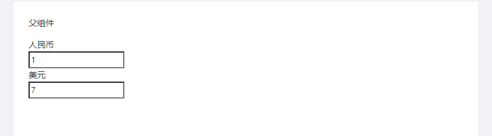
1 | //父组件 |
1 | //Child1组件 |
1 | import React, { Component } from 'react' |
React创建组件
1 | 1.React 一共有两种创建组件的方式 |
函数式组件
1 | 1.一个构造函数 就是一个函数式的组件 |
1 | function Hellow(){ |
函数式组件的传值与接收
1 | 1.接收的时候是在函数式组件里的props形参中接收的 |
1 | //这里是要传入的值 |
1 | //展开写法 |
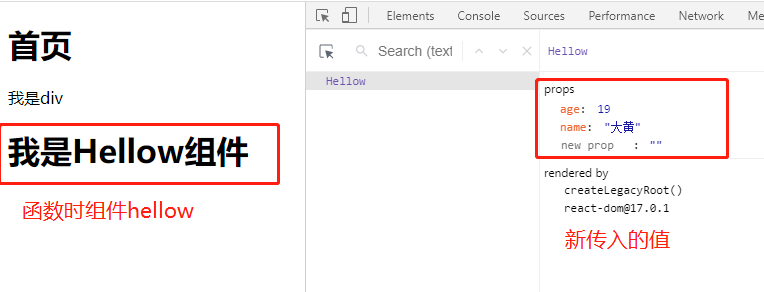
1 | //抽离出来的jsx组件 |
函数是组件默认值的设置
1 | 1.这里我们需要使用静态成员的方式去设置 |
1 | function UserLog(props){ |
Class组件(类组件)
1 | 1.Class组件 要继承 React.Component |
1 | //使用class |
class组件传参
1 | //使用class创建的组件 传进来的参数 不需要接收 直接使用this.props.就可以接收 |
class组件中的this.state
1 | 1.类组件都是有自己的状态 |
1 | class Ctm extends React.Component { |
使用this.setState修改state数据
1 | 1.React 中不像Vue中 你数据变了视图自己会变 如果要给state中的数据重新赋值 就要用setState |
1 | class MyEvent extends React.Component{ |
1 | //setState方法是异步的 要想写入同步的代码 就要在这个回调里面去写 |
子组件向父组件传递数据
1 | 1.React 中没有向Vue中那样 可以使用$emit去触发事件函数 在回调里 拿到数据的值 |
1 | class ChildView extends React.Component{ |
组件的生命周期
1 | 1. 挂载卸载过程 |
挂载卸载过程
1 | 1.1.constructor() |
更新过程
1 | 2.1. componentWillReceiveProps (nextProps) |
新增的生命周期
1 | 3.1. getDerivedStateFromProps(nextProps, prevState) |

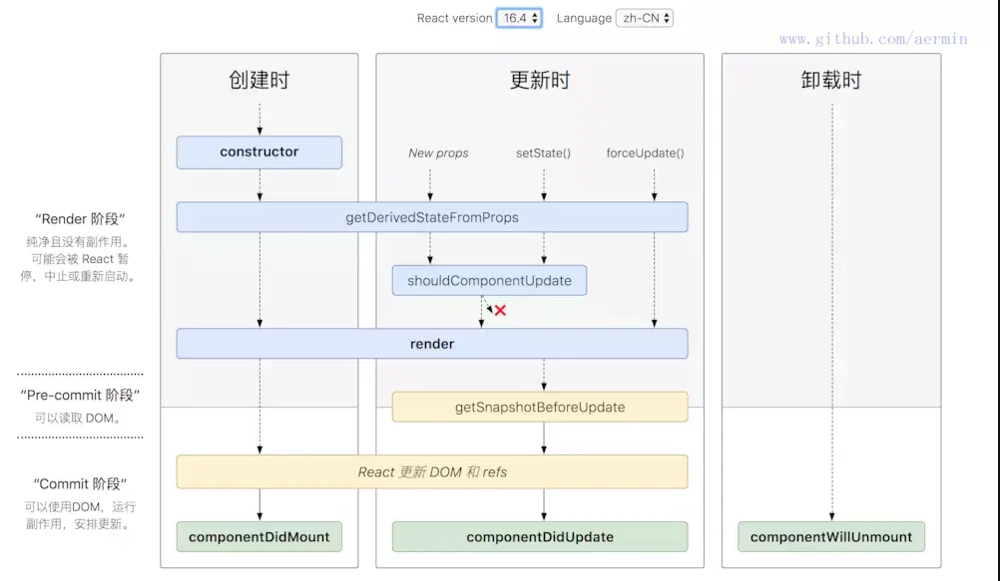
React中的style编写
1 | 1.在React中要是写行内样式 必须要写花括号 |
1 | class Ctm extends React.Component { |
1 | //也可以采用在外面 命名一个对象 在来写 |
1 | //让然我们也可以把样式写在一个集合里 然后去使用它 |
React使用CSS
1 | 1.webpack打包的时候 不认识css文件 所以我们需要安装对应的loader style-loader css-loader -D |
1 | //webpack 配置 css loader |
1 | //在相关的组件引入你写好的css文件 直接 使用className 指定你写好的样式名称即可 |
React中的css 配置作用域
1 | 1.因为我们css 没有导出 的语法 所以 导入的时候就是一个空对象 这个里面的所有 样式 都会对组件应用生效 |
1 | const path = require('path') |
1 | //开启了模块作用域之后 我们可以看到 打印出来的css文件就是一个对象 |
css模块化自定义规则
1 | 1.上面我们看到了 css开启模块化之后 打印出来的对象里面的值 |
1 | //例子 自定义了我们的类名 |
高版本的css-loader配置
1 | const path = require('path') |
css中的全局
1 | 1.开启了css 模块化之后 我们单独写的css文件就是一个模块 |
css中的一个元素添加多个类名的方式
1 | 1.可以采用类名拼接的方式去写 |
1 | import cssObj from '@/css/cmitem.css' |
1 | import cssObj from '@/css/cmitem.css' |
React中的事件绑定
1 | 1.React中 有一套自己的事件绑定机制 采用驼峰 |
1 | //React中 事件里面是一个函数 |
1 | //class组件可以通过条用自己的方法 去产生事件处理函数 |
1 | //目前最规范的语法 这样写还可以传入参数 |
React中的文本框绑定
1 | 1.在React中没有 指令的概念 也就是说我们使用不了 v-model 这种的双向绑定 |
1 | //第一种 通过事件处理函数e 拿到 当前文本框的值 |
1 | //第二种 通过this.ref.value |
create react app 脚手架的使用
1 | 1.需要全局安装 npm install -g create-react-app |
在 create react app 配置跨域代理
1 | 1.我们这里的数据由于使用的是 json-server 所用需要跨域 详情的 json-server 笔记 |
1 | //配置如下 |
react 多行标签
1 | 1.我们知道 vue中没个元素 只能由一个根节点 也就是 一个组件中需要由一个元素去包裹 不能写多行标签 |
1 | //使用空标签的形式 |
React中的路由的使用
1 | 1.首先需要安装 react-router-dom 这个包 npm install renact-router-dom -S 这个依赖包的功能会更多一些 |
Route写法
1 | 1.Route 相当于 Vue中的 component 标签 path属性 是路径 component属性 相当于is 就是你要渲染的组件 |
1 | //入口文件 index.js |
1 | //在根组件中 引入 对应的组件 引入 Route 然后写入 需要渲染的组件 和路径 |
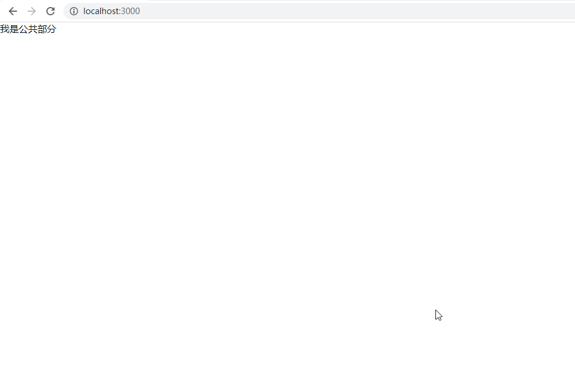
路由导航 Link
1 | 1.相当于 我们vue中的router-link 通过按钮的形式 去想去的组件 在React中 组件是Link 需要从react-router-dom中引入 |
1 | //引入了link 标签 |
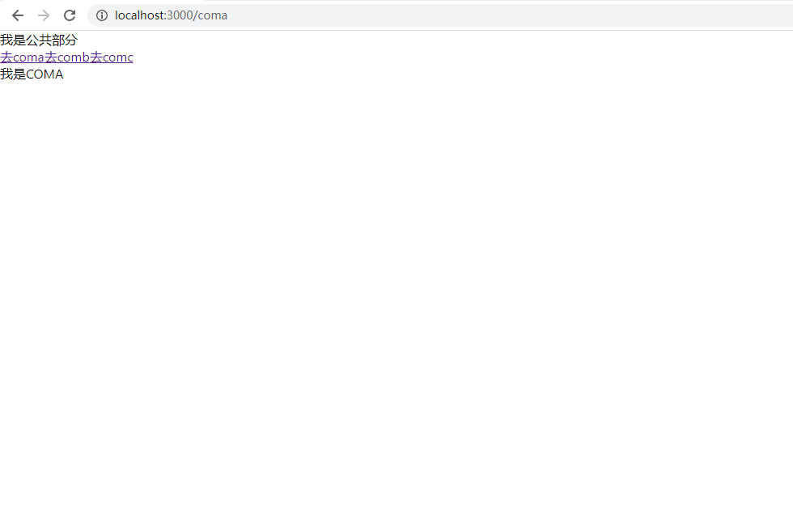
路由导航 NavLink
1 | 1.使用方式和 Link 一样 需要从react-router-dom 中引入 |
1 | //NavLink |
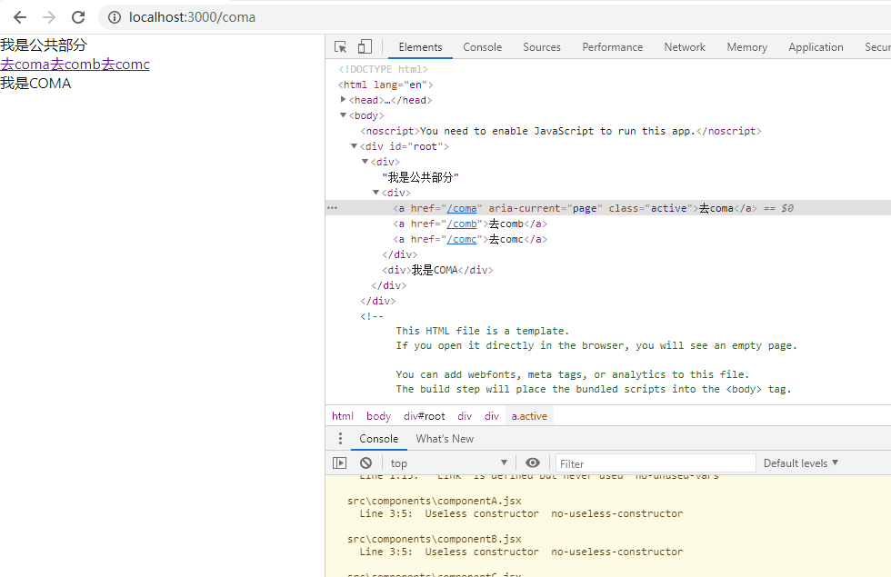
精准匹配 exact
1 | 1.我们知道 我们的路由路径 都是以 / 斜杠什么的而开头 |
1 | import './App.css' |
路由的唯一渲染 Switch标签
1 | 1.当我们有多个route标签 去渲染同一个组件的时候 会都渲染出来 |
1 | import './App.css' |
路由的重定向 Redirect 标签
1 | 1.当你当问 一个路径的之后 我把它重定向到别的路径 |
1 | import './App.css' |
二级路由
1 | 1.我们刚刚看到了一级的路由 点击按钮 显示对应的组件 |
1 | //componentC.jsx |
1 | import './App.css' |
1 | //下面的动图可以看到 当我们点击 一级路由按钮的时候 它只显示 一级路由对应的组件 当切换到comc的时候 这里又二级路由所以在点击的时候 我们就在comc组件下面 显示到了二级路由对应的组件 当我们输入重定向的时候 它就去到了 /comc/comca 这个路径下面所匹配的组件 |
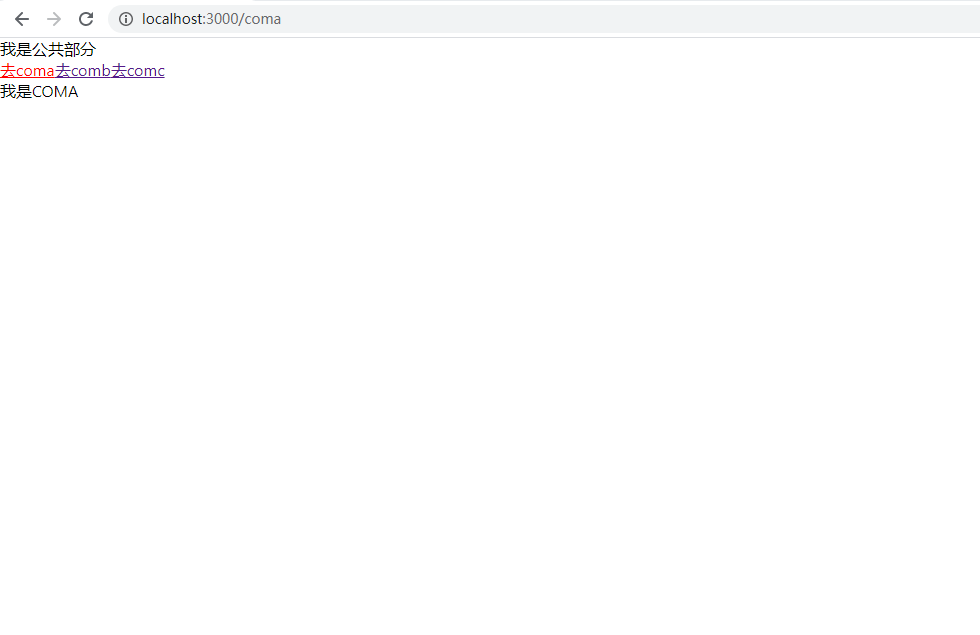
高阶组件 withRouter
1 | 1.当我们的组件 不是路由切换的组件也具有路由切换的组件的三个属性 |
1 | import './App.css' |
1 | //使用WithRouter包裹 |
编程式导航
1 | 1.我们有了高阶组件之后 就可以使用它对应的api 可以在那三个属性里 拿到对应的值去使用 |
1 | import './App.css' |
路由传参
1 | 1.有的我们在页面跳转的时候 需要传递对应的参数 |
params传参
1 | //首先路由匹配的规则里 加动态参数 然后点击的时候 传参 |
1 | //然后我们在需要接收参数的组件里 使用this.props.match.params.id接收 |
query传参
1 | //query传参 就去要把按钮重新改写一下 |
1 | //coma组件在接收的时候 使用this.props.location.query |
1 | //剩下的一些按钮之间的传递的参数语法 |
Hook
1 | 1.HOOK 是React 16.7 新增的属性 让无状态组件 使用状态 |
1 | import './App.css' |
1 | //我们可以使用传入对象的形式 去定义多个数据 |
Redux的使用
1 | 1.redux js 提供了一个可预测型的的状态容器 我们给一个固定的输入 那么必定可以得到一个结果 |
redux的数据获取
1 | 1.基本使用 首先创建数 这个数据一定是个函数 然后 返回你的数据 |
1 | //我们新建一个store文件夹 下面新建一个数据文件 data.js 记住这里创建的数据 是以函数的形式返回的 |
1 | //然后在store 文件夹下面 新建一个 index.js 文件 这个文件用来 创建 redux 并且把我们刚才的那个数据文件 里的数据变成公共的数据管理状态 |
1 | //然后在需要 使用到公共状态的 引入我刚刚创建的那个 index.js文件 使用getState来获取数据 |
redux的数据修改
1 | 1.我们redux 其实 和vue一样 不能直接修改数据 也是动过dispatch函数 发射action 来修改数据 |
1 | //我们定义的数据函数的第二个参数用来接收 dispatch发送过来的函数 这个函数是带着参数过来的 |
1 | // store.dispatch 发送的函数 这个函数的返回值 就是我们上面 data函数里 第二个参数 |
1 | //然后在页面中 触发 我们写入的这个函数 |
combinReducers
1 | 1.用来合并多个reducer |
1 | //首先我们写两个reducer 文件 |
1 | //关于触发 当我们发送actioc的时候 是要 reducer 写的 判断逻辑都一样 那么 就都会 改变值 |
React-redux
1 | 1.我们上面已经讲过了 redux 的使用流程 |
react-redux两个重要的概念
1 | 1.Provider 是一个组件 能够让你的整个app都能获取到store中的数据 一般放在根组件中 |
Provider 组件
1 | 1.Provider 包裹在根组件最外层 是所有组件都可以拿到state |
connect 方法
1 | 1.被Provider 包裹的内部组件 并且把我们写好的reduc的store传入进去 要想使用 state中的数据 就必须要connect 进行一层包裹封装 |
1 | 1.如下图所示 我们在点击底部tab的时候 上面的header 的title也相应的改变 |
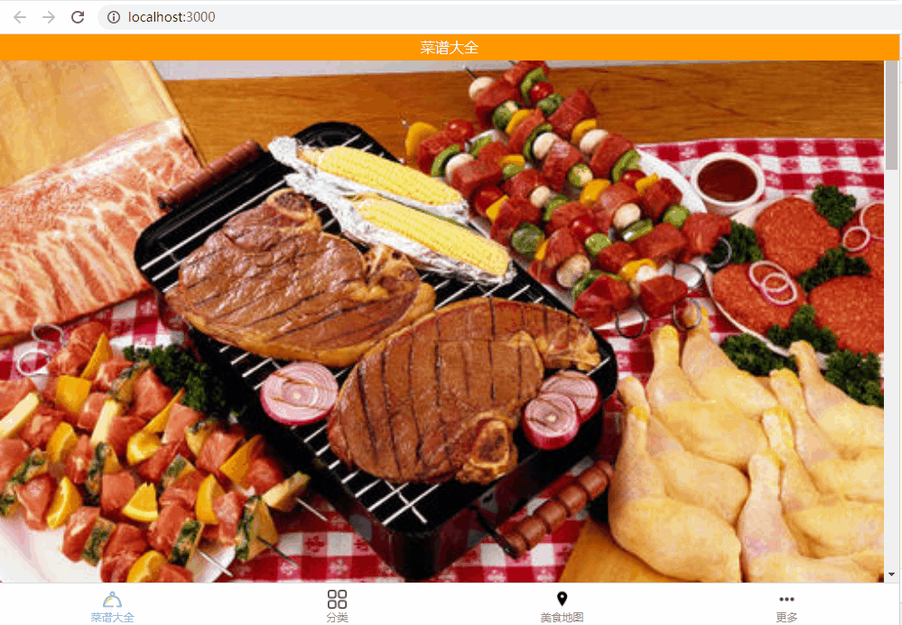
1 | // 在app根组件 使用Provider 进行包裹 并且把我们的store 传入进去 |
1 | //在我们的tab组件 使用connect 函数 进行包裹 并且 传入对应改变状态的第二个参数 |
1 | //home组件 作为使用公共主数据 我们也需要使用connect包装器来 然后传入第一个参数 |
多个action 发送的技巧
1 | 1.因为我们有的时候需要发送多个action 所以 我们会把这些都单独写在一个文件下 |
1 | //我们发送多个action 的文件 counter.js |
1 | //然后我们需要在发送action的组件中引入 |
react-redux流程图
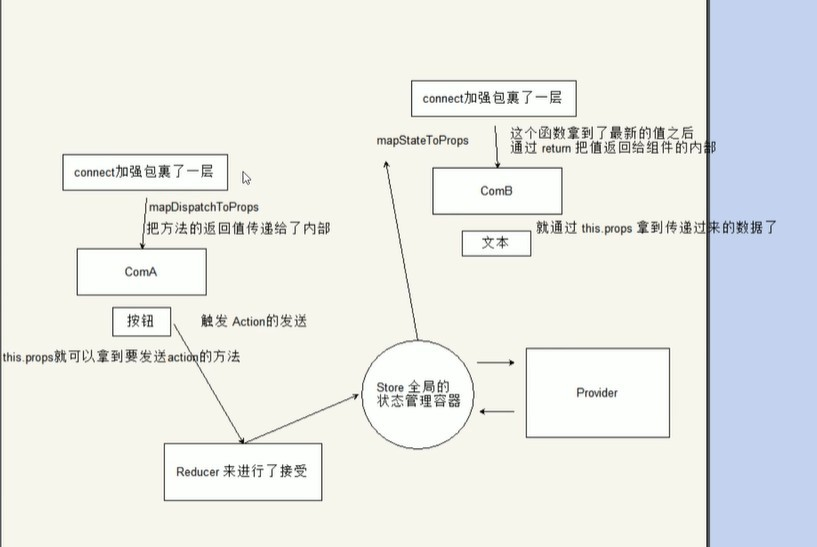
redux-saga
1 | 1.可以理解为一个中间件函数 在redux里 中间件是运行在action发送出去 达到 reducer 之间的一段代码 可以把代码的流程变为 action -> Middlewares -> reducer(公共状态) 这种机制可以让我们改变数据流 实现列入 异步的action action过滤 日志输入 异常报告等功能 |
react-saga常用API
1 | 1.createSagaMiddleware(options)创建一个Redux middleware 并将Saga 连接到redux store options参数 传递给middleware的选项列表 默认可以不用传递 |
saga的配置
1 | //引出创建store 和 注册中间件的函数 |
saga
1 | 1.这里的saga 就是我们 发送action 到 store 中间执行的那一段代码 |
1 | //代码如下 我们 写了一个组件 分辨发送了action |
1 | class Plus extends React.Component{ |
1 | takeEvery,takeLatest,Throttle 的区别 |
call 和 put的使用
1 | //比如登录时候 我们登录成功之后 后台会给我们返回一系列的用户信息之类的 数据 这个时候 我们需要 把它存放在store里 这里 就需要用put 再次发送action |
all 使用
1 | 1.我们通常会有多个对应的sagas文件 比如 我们获取商品列表页面的时候 要写一个saga文件 然后写订单列表的时候 又要写一个saga 文件 |
1 | //这里用轮播图的请求举例 首先来看下我们总的saga文件 saga.js文件 |
1 | //对应的模块的saga 文件 首先我们要是导出 然后还是要用生成器函数 切记 否则会报错 |
1 | //swiper 的 reducer 文件 |
saga 异步请求的流程
1 | 1.首先我们对应的组件 会先去对应的reducer 里面取数据 第一次没有触发action |
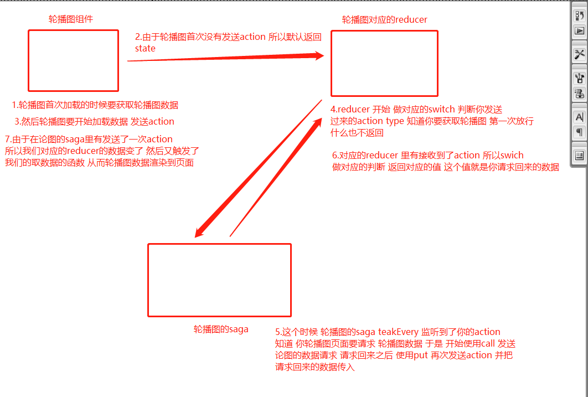
react-thunk
1 | 1.主要是用来处理 redux的异步请求 |
1 | //配置 这里我们一商品列表 和 通知中心举例 |
1 | // 这里在发送的时候 就有所不同 我们还是在 每个页面文件里 使用this.prop.dispatch去发送 不过这里的传参是个函数 |
1 | //store/actions/product目录下 的 函数 |
react-thunk 多个action处理
1 | 1.我们在发射多个action的时候 上面已经说到 通过 redux 自带的 bindActionCreators 去发送 |
1 | //配置 redux |
1 | //配置 reducer |
1 | //发射aciont的文件 |
1 | //需要发送action的 组件文件 |
小技巧
1 | 1.VSCODE中的 注释的代码折叠 |


公告
感谢访问本站，如喜欢请收藏。本站主要分享前端知识，立志成为资深前端工程师，但目前是一个前端界的小学生 若喜欢可以打赏请博主喝一杯冰阔落
另外请大家多多支持淼哥的开源项目
https://github.com/flipped-aurora/gin-vue-admin
🌟🌟欢迎大家start 🌟🌟
欢迎加入博主的前端技术交流群